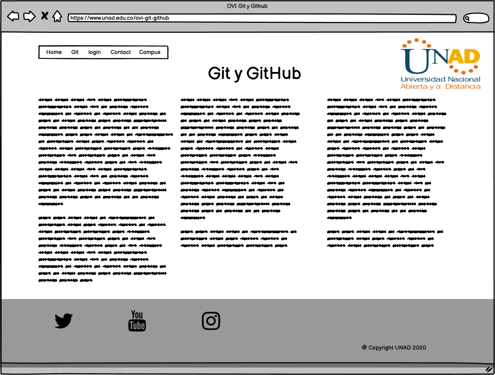

OVI FASE 3 GIT Y GITHUB
Objetivo General |
| Desarrollar habilidades practicas en desarrollo de software mediante el uso de lenguajes de programación como html |
Objetivos Especificos |
| - Descubrir mediante el estudio de la tematica las funcionalidades de Html |
| - Designar mediante Mockups el estilo que tendra la pagina web |
| - Organizar de forma detallada la información diseñando la pagina web solicitada en Html |
Html
HTML significa lenguaje de marcado de hipertexto, y le permite al usuario crear y estructurar secciones, párrafos, encabezados, enlaces y elementos de cita en bloque (blockquotes) para páginas web y aplicaciones. HTML no es un lenguaje de programación, lo que significa que no tiene la capacidad de crear una funcionalidad dinámica. En cambio, hace posible organizar y formatear documentos, de manera similar a Microsoft Word. Cuando trabajamos con HTML, utilizamos estructuras de código simples (etiquetas y atributos) para marcar una página web. Por ejemplo, podemos crear un párrafo colocando el texto encerrado dentro de una etiqueta inicial p y de cierre p.
Esta es la forma de insertar un párrafo en HTML.
¡Puedes tener más de uno!
En general, HTML es un lenguaje de marcado que es realmente sencillo y fácil de aprender incluso para los principiantes absolutos en la construcción de sitios web.
Git
Los sistemas de control de versiones son programas que tienen como objetivo controlar los cambios en el desarrollo de cualquier tipo de software, permitiendo conocer el estado actual de un proyecto, los cambios que se le han realizado a cualquiera de sus piezas, las personas que intervinieron en ellos, etc.
Este artículo sirve como introducción a este tipo de herramientas de manera global, pero también para conocer uno de los sistemas de control de versiones existentes en la actualidad que se ha popularizado tremendamente, gracias al sitio Github. Se trata de Git, el sistema de control de versiones más conocido y usado actualmente, que es el motor de Github. Al terminar su lectura entenderás qué es Git y qué es Github, dos cosas distintas que a veces resultan confusas de entender por las personas que están dando sus primeros pasos en el mundo del desarrollo.
GitHub
GitHub es un sistema de gestión de proyectos y control de versiones de código, así como una plataforma de red social diseñada para desarrolladores. ¿Pero para qué se usa GitHub? Bueno, en general, permite trabajar en colaboración con otras personas de todo el mundo, planificar proyectos y realizar un seguimiento del trabajo.
Como su nombre indica, la web utiliza el sistema de control de versiones Git diseñado por Linus Torvalds. Un sistema de gestión de versiones es ese con el que los desarrolladores pueden administrar su proyecto, ordenando el código de cada una de las nuevas versiones que sacan de sus aplicaciones para evitar confusiones. Así, al tener copias de cada una de las versiones de su aplicación, no se perderán los estados anteriores cuando se va a actualizar.
Así pues, Git es uno de estos sistemas de control, que permite comparar el código de un archivo para ver las diferencias entre las versiones, restaurar versiones antiguas si algo sale mal, y fusionar los cambios de distintas versiones. También permite trabajar con distintas ramas de un proyecto, como la de desarrollo para meter nuevas funciones al programa o la de producción para depurar los bugs.
Las principales características de la plataforma es que ofrece las mejores características de este tipo de servicios sin perder la simplicidad, y es una de las más utilizadas del mundo por los desarrolladores. Es multiplataforma, y tiene multitud de interfaces de usuario.
Así pues, Github es un portal para gestionar las aplicaciones que utilizan el sistema Git. Además de permitirte mirar el código y descargarte las diferentes versiones de una aplicación, la plataforma también hace las veces de red social conectando desarrolladores con usuarios para que estos puedan colaborar mejorando la aplicación.
Mockup
Recursos
twitter UNAD @UniversidadUNAD
|
|
Autoevaluación
William Oswaldo Acevedo Medina |
05-Noviembre-2020 |
Ingenieria de sistemas |
Cel: 3167429482 |
Skype: woam12 |
e-mail: woam12@hotmail.com |